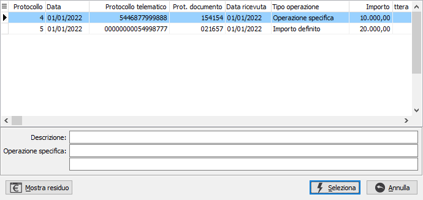
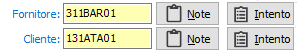
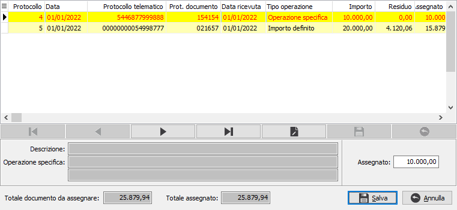
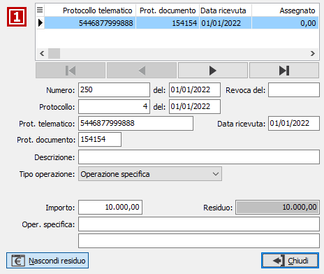

Gestione lettere di intento su documenti/contabilità
A livello di codici IVA è stata introdotta la possibilità di definire più codici Iva di esenzione, ed attraverso l’impostazione del nuovo parametro presente sul codice Iva “Tipo trattamento esportazioni” è possibile definire più codici Iva distinti sia per vendite ad esportatore abituale (quindi con dichiarazione d’intento) che per le altre esportazioni.
A livello di gestione documenti è stata introdotta la possibilità di associare una specifica lettera di intento, in modo da gestire le dichiarazioni di intento per operazioni specifiche o per importo definito.
L'associazione è prevista per la prima nota contabile, per gli ordini clienti e fornitori, per i DDT e per le fatture di vendita e di acquisto e per le fatture terzisti; l'associazione su ordini e DDT implica che la lettera di intento associata diventi condizione di raggruppamento per la successiva evasione o fatturazione.
In presenza di più dichiarazioni di intento attive per lo stesso cliente/fornitore viene richiesta la selezione della lettera di intento da utilizzare; nella finestra è presente un pulsante che consente di mostrare l'importo residuo per ogni dichiarazione.

Nella pagina dei dati di fatturazione del documento, a fianco del codice di esenzione è presente il pulsante di gestione delle lettere di intento.

Nella sezione dati Iva del movimento contabile, per fatture di acquisto e di vendita, di fianco al cliente/fornitore è presente il pulsante di gestione delle lettere di intento.
Nel caso sia attiva la possibilità di assegnare più lettere ad un documento, è comunque necessario selezionare la lettera principale, se presenti più lettere; al momento del salvataggio del documento compare la finestra di selezione importi in cui le lettere di intento sono preselezionate partendo dalla lettera già assegnata e per l’importo mancante in concorrenza, sono selezionate le lettere ordinate per data lettera/numero lettera.

In questa fase è possibile assegnare o disassegnare la lettera manualmente tramite il doppio click del mouse sulla griglia o con l’attivazione del menù contestuale. L’importo assegnato può essere indicato anche manualmente anche per un importo superiore alla lettera intento, se l’importo assegnato supera il valore della lettera sarà visualizzato un messaggio che consentirà di proseguire se in configurazione è stato indicato il controllo non bloccante altrimenti non sarà consentita la registrazione del documento. Se presente una sola dichiarazione intento valida questa viene selezionata automaticamente senza aprire la finestra.
Tramite il pulsante si accede ad un menù da cui è possibile assegnare una lettera di intento, selezionandola se sono presenti più lettere per il cliente/fornitore, cancellare l'assegnazione attualmente in atto oppure visualizzare i dati delle lettere assegnate al momento. Se si sceglie di visualizzare la lettera compare la finestra seguente:
